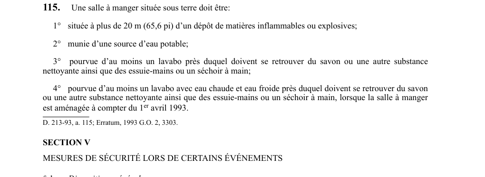

art-115-RSSM : aménagement salle manger souterraine
Un article du wiki ⚖️ Recueil législatif
En bref
Une salle à manger souterraine doit être située à plus de 20 m (65,6 pi) d'un dépôt de matières inflammables ou explosives. Cette obligation vise l'employeur.
- Être munie d'une source d'eau potable.
- À plus de 20 m (65,6 pi) d'un dépôt de matières inflammables ou explosives.
- Source d'eau potable.
- Au moins 1 lavabo avec savon et essuie-mains.
- Si aménagée à compter du 1er avril 1993 : lavabo avec eau chaude.
🌐 LegisQuébec · 📄 PDF officiel
Texte officiel : capture du PDF

Toucher l'image pour l'agrandir🔗 Voir art. 115 RSSM dans le PDF (page 42)
Version : texte officiel du RSSM (RLRQ c. S-2.1, r. 14), à jour au 1er mai 2024 — Éditeur officiel du Québec
Voir aussi
- art. 113 : vestiaire-séchoir travailleurs mine · obligation : un vestiaire-séchoir aménagé séparément selon le sexe doit être mis à la disposition des travailleurs, comprenant des armoires individuelles avec espace libre de 600 mm devant, un système de séchage des vêtements.
- art. 114 : température éclairement vestiaire-séchoir · obligation : un vestiaire-séchoir doit être maintenu à une température minimale de 22 °C (71,6 °F) et être pourvu d'un niveau d'éclairement minimal de 250 lux mesuré conformément à l'article 110.
- art. 116 : interdiction feu sous terre · interdiction : nul ne peut allumer ou alimenter un feu sous terre.
- art. 117 : mesures de sécurité d'urgence · obligation : pour toute mine souterraine, des mesures de sécurité en cas d'incendie, d'infiltration, d'inondation, d'effondrement ou d'événement similaire doivent être élaborées, portant sur 12 éléments obligatoires incluant les obligations du travailleur, l'organisation du sauvetage.
- ⚖️ Loi habilitante : LSST
- ↑ Index du bloc : Ventilation et qualité de l'air
Pages qui pointent ici (5)
- art-113-RSSM : vestiaire-séchoir travailleurs mine Recueil législatif
- art-114-RSSM : température éclairement vestiaire-séchoir Recueil législatif
- art-116-RSSM : interdiction feu sous terre Recueil législatif
- art-117-RSSM : mesures de sécurité d'urgence Recueil législatif
- RSSM : Ventilation et qualité de l'air (art. 100 à 130) Recueil législatif